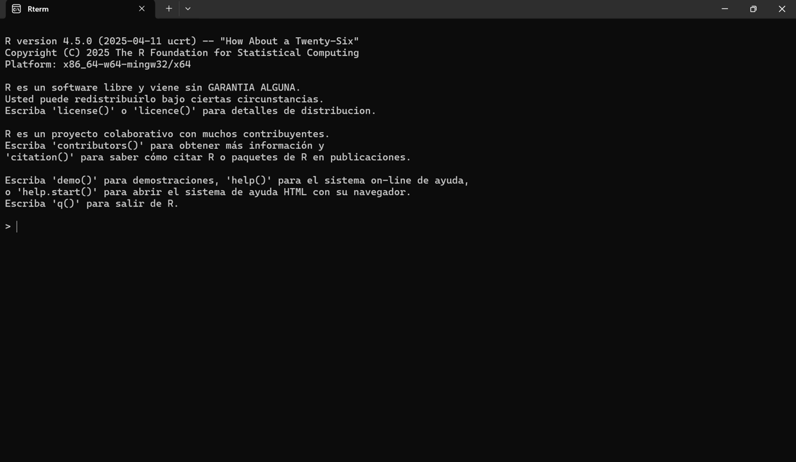
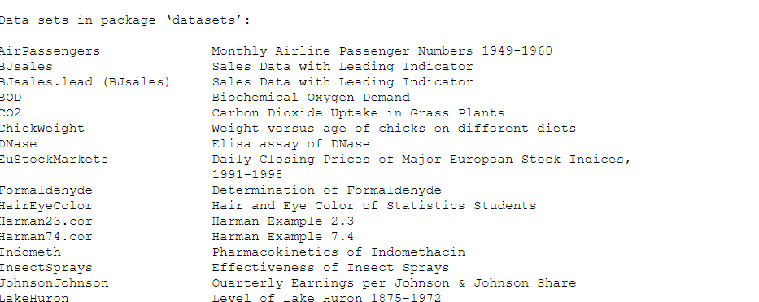

install.packages("vegan")
library(vegan)Tema 1. Primera parte - Introducción general a R
Objetivos de aprendizaje
- Comprender qué es R y cómo instalarlo.
- Ejecutar comandos básicos en R.
- Familiarizarse con RStudio y su interfaz.
- Importar y exportar datos en distintos formatos.
- Organizar el trabajo en proyectos de R.
1. ¿Qué es R?
R es un lenguaje de programación libre y gratuito, especialmente indicado para análisis estadístico y elaboración de gráficos.
Todo el código de R está disponible como software libre bajo las condiciones de licencia GNU-GPL. Esto implica que cualquier usuario final puede usar, estudiar, compartir (copiar) y modificar el software.
Puedes acceder al proyecto R en: http://www.r-project.org
2. Instalación de R
Sigue las instrucciones en https://cran.r-project.org/ para instalar R según tu sistema operativo.
2.1 Usuarios de Windows
Para usuarios de Windows, selecciona el enlace ‘Download R for Windows’, luego haz clic en el enlace ‘base’ y finalmente en ‘Download R 4.3.3 for Windows’. Esto iniciará la descarga del archivo de instalación .exe.
Una vez completada la descarga, haz doble clic en el archivo ejecutable de R y sigue las instrucciones en pantalla.
Las instrucciones completas de instalación se pueden encontrar en el sitio web de CRAN.
2.2 Usuarios de Mac
Para usuarios de Mac, selecciona el enlace ‘Download R for (Mac) OS X’. El archivo binario se puede descargar seleccionando ‘R-4.3.3.pkg’.
Una vez descargado, haz doble clic en el icono del archivo y sigue las instrucciones en pantalla para completar los pasos necesarios.
Consulta el documento ‘R for Mac OS X FAQ’ para más información sobre la instalación.
2.3 Usuarios de Linux
Para usuarios de Linux, el método de instalación dependerá de la distribución que estés utilizando. Hay instrucciones bastante completas para Debian, Redhat, Suse y Ubuntu.
En la mayoría de los casos, puedes usar el gestor de paquetes de tu sistema operativo para instalar R desde el repositorio oficial.
En Ubuntu, abre una terminal y ejecuta los siguientes comandos (necesitarás permisos de administrador):
sudo apt update
sudo apt install r-baseSi recibes un error al ejecutar los comandos anteriores, puede que necesites añadir una entrada a tu archivo sources.list. Para hacerlo, abre el archivo /etc/apt/sources.list en tu editor de texto favorito (gedit, vim, nano, etc.) y añade la siguiente línea (también necesitarás permisos de administrador):
deb https://cloud.r-project.org/bin/linux/ubuntu disco-cran35/Una vez hecho esto, vuelve a ejecutar los comandos apt anteriores y deberías estar listo para comenzar.
2.4 Primeros ejercicios: Aprende a utilizar la consola de R
Abre la consola de R

Ejercicio 1: Imprimir valores
"Bienvenidos al curso de R y SIG"Ejercicio 2: Operar
El uso más sencillo que se le puede dar a R es el de una calculadora. Consideremos las siguientes operaciones:
Sumar: +
Restar: -
Multiplicar: *
Dividir: /
Exponenciar: ^
Ejercicio 3: Crear objetos con <-
Objetivo: Guardar valores en objetos para usarlos más adelante.
Ejercicio 3. Crea el objeto y y asignale el valor 3
Imprime el objeto y
Ejercicio 4: Operar con objetos
Ejercicio 5: Utilizar funciones
¿Qué es una función en R?
Una función en R es una herramienta que realiza una tarea específica. Si piensas en analizar datos como si fuera cocinar las funciones son como robots de cocina: le das una entrada (argumentos o ingredientes), realiza una operación (pica, tritura o calienta), y te devuelve una salida (resultado, plato hecho).
R viene con un montón de funciones listas para usar. Por ejemplo, la función mean() calcula la media de un conjunto de números.
¿Cómo usar funciones ya creadas?
Para utilizar las funciones en R solo necesitas:
Escribir el nombre de la función.
Proporcionar los argumentos necesarios entre paréntesis.
Ejemplo 1: Funciones con un argumento. Calcular la media y la raíz cuadrada
Ejemplo 2: Funciones con más de un argumento. Logaritmo y redondeo
Algunas funciones en R necesitan más de un dato para funcionar. Por ejemplo, si quieres redondear un número, puedes decirle cuántos decimales usar. Puedes escribir los datos en orden o decirle a R cuál es cuál usando el nombre del argumento. Así tienes más control sobre lo que hace la función.
En los ejemplos de arriba hemos nombrado los argumentos de forma explícita pero esto no es estrictamente necesario. Si no se nombran la función opera igualmente
Pero OJO 👀 si no nombramos los argumentos no se pueden cambiar de orden
3. ¿Qué es RStudio?
RStudio es un entorno de desarrollo integrado (IDE, por sus siglas en inglés) diseñado específicamente para trabajar con el lenguaje de programación R. Es una herramienta que facilita la escritura de código, la visualización de datos, la creación de gráficos y la elaboración de informes.

4. Instalación de Rstudio
4.1 Windows
Ve a la página oficial: https://posit.co/download/rstudio-desktop/
Haz clic en Download RStudio for Windows.
Ejecuta el archivo
.exedescargado.Sigue los pasos del instalador (siguiente, siguiente… ¡listo!).
4.2 Linux
Elige tu distribución (Ubuntu, Fedora, etc.) en la página de descargas.
Descarga el archivo .deb (para Ubuntu/Debian) o .rpm (para Fedora).
Instala desde terminal:
sudo dpkg -i rstudio-x.yy.zzz-amd64.deb4.3 macOS
Descarga el instalador para macOS desde la misma página.
Abre el archivo
.dmgy arrastra RStudio a la carpeta Aplicaciones.Ábrelo desde Launchpad o Finder.
5. Primeros pasos en RStudio
Al abrir RStudio verás cuatro paneles principales. El más importante es la consola, donde puedes ejecutar comandos.

5.1 Consola
Función: Ejecutar código y ver resultados inmediatos
Consejo: Ideal para pruebas rápidas y exploración
Es igual que la consola que hemos manejado cuando hemos abierto R sin Rstudio (ver ejercicios 1 a 5)
5.2 Panel de edición (Script)
Función: Escribir y guardar código en archivos .R, .Rmd o .qmd
Consejo: Ejecuta líneas con Ctrl + Enter (Windows/Linux) o Cmd + Enter (macOS
🧾 ¿Qué es un script en R? Un script en R es un archivo de texto donde puedes escribir, guardar y reutilizar conjuntos de instrucciones. Es como una libreta de recetas para tus análisis de datos.
🧑🍳 Una metáfora culinaria: Si pensamos en el análisis de datos como si fuera una actividad de cocina, un script sería como tu libro de cocina:
- Cada línea de código es como un paso de una receta. Puedes seguirla paso a paso, modificar ingredientes (datos) o repetirla cuando quieras. Guardar tus scripts te permite documentar tu trabajo y reproducir tus análisis fácilmente.
Ejercicio 6: Crea y guarda tu primer script
En este ejercicio aprenderás a crear tu primer script en R usando RStudio. Un script es un archivo donde puedes escribir y guardar tu código para ejecutarlo más tarde.
Paso 1: Abrir el editor de scripts
Ve al menú File > New File > R Script.
Paso 2: Escribir tu primer script de código
Escribe el siguiente código en el script:
Paso 3: Guarda tu primer script
Una vez que hayas escrito tu código en el editor de panel de edición, sigue estos pasos para guardarlo:
Haz clic en el menú File (Archivo).
Selecciona Save o presiona el atajo de teclado
Ctrl + S(Windows/Linux) oCmd + S(macOS).Elige una carpeta donde quieras guardar tu archivo.
Escribe un nombre para tu script, por ejemplo:
primer_script.RHaz clic en Guardar.
Ejercicio 7: Ejecuta el código del script
Ejecutar una sola línea
Coloca el cursor en la línea que quieres ejecutar.
Presiona
Ctrl + Enter(Windows/Linux) oCmd + Enter(macOS).El resultado aparecerá en la consola (panel inferior izquierdo).
Ejecutar varias líneas
Selecciona varias líneas de código con el ratón o el teclado.
Presiona
Ctrl + EnteroCmd + Enter.Todas las líneas seleccionadas se ejecutarán en orden.
Ejecutar todo el script
Ve al menú
Code > Run Region > Run All
o haz clic en el botónSource(ícono de hoja con flecha verde) en la parte superior del script.También puedes usar el atajo
Ctrl + Shift + Enter(Cmd + Shift + Enteren macOS).Todo el contenido del script se ejecutará en la consola.
5.3 Entorno de trabajo / Historial
Función: Ver objetos creados (variables, funciones, etc.) y el historial de comandos
Consejo: Útil para revisar qué has hecho y qué está disponible
En R, el entorno de trabajo es el espacio donde se almacenan los objetos que creamos (vectores, funciones, data frames, etc.). Podemos inspeccionar, modificar y limpiar este entorno usando funciones específicas.
Ejercicio 8: Crear, listar y borrar objetos en el entorno de trabajo
5.4 Archivos / Gráficos / Paquetes / Ayuda / Viewer
- Funciones:
- Ver gráficos generados
- Gestionar paquetes
- Consultar ayuda de funciones
- Navegar por archivos del proyecto
Este panel de RStudio permite gestionar varios aspectos clave del entorno de trabajo. Vamos a centrarnos en paquetes, con ejemplos aplicados a biodiversidad.
Paquetes Los paquetes en R son colecciones de funciones, datos y documentación que amplían las capacidades básicas del lenguaje. Para trabajar con biodiversidad, hay paquetes muy útiles que permiten cargar datos ecológicos, calcular índices de diversidad, y visualizar mapas o redes de especies.
¿Cómo se instalan y cargan?
ADVERTENCIA: Los siguientes ejercicios requieren el paquete vegan, que no está disponible en webR. Para ejecutarlo, usa R en tu ordenador local.
¿Cómo se usan los paquetes?
?vegan
help("vegan")Ejercicio 9. Uso de la función specnumber del paquete vegan
# Datos de abundancia de especies en dos sitios para el ejercicio
datos <- data.frame(
sitio1 = c(3, 0, 1, 5),
sitio2 = c(0, 2, 0, 4),
row.names = c("Aves", "Mamíferos", "Reptiles", "Insectos")
)
datos
# Cargar el paquete
library(vegan)
# explorar para qué sirve la función specnumber
?specnumber
# Calcular riqueza (número de especies presentes)
riqueza <- specnumber(datos)
riqueza6. Aprender a cargar y guardar datos
6.1 Importar datos al entorno de trabajo
Para poder proceder con un análisis de datos, debemos cargar los datos en R. En este tutorial aprenderemos a importar y exportar datos en diferentes formatos. Hemos seleccionado los más comunmente utilizados.
Podemos importar en formato texto o tabulares desde un archivo .txt o .csv Podemos importar directamente desde Excel, archivos .xls o .xlxs También existen formatos propios de R, como los .Rdata o .rda y los serialized R objects .rds
6.2 Cargar datos integrados
R viene con varios conjuntos de datos ya cargados que puedes usar para practicar sin tener que importar nada. Puedes escribir data() para ver la lista completa.
Para cargar los datos integrados basta con escribir data() y el nombre de los datos.

Ejercicio 10: Cargar datos integrados
Durante este ejercicio vamos a utilizar el conjunto o set de datos iris. Este conjunto de datos, contiene datos sobre características florales de tres especies del género Iris.
Para cargarlo utilizaremos la función data(), y lo exploraremos utilizando la función head() que nos permite visualizar las primeras 6 filas. También vamos a introducir nuevas funciones que nos permitirán explorar el conjunto de datos iris: dim() colnames() y tail()
6.3 Importar datos desde CSV
Aunque esta forma de importar datos puede ser muy útil para probar funciones o aprender a escribir código lo normal es que queramos cargar una base de datos propia. Uno de los formatos más sencillo de importar y que además ofrece buenas propiedades de interoperabilidad es el .csv
Vamos a trabajar con los datos de una base de datos de la abundancia de especies en herbazales de Alberta en Estados Unidos.
Comenzaremos por descargar los datos desde aquí
NOTA: Los datos originales provienen de un taller sobre análisis de la biodiversidad en R que se pueden encontrar aquí.
Para cargar el archivo tienes que cambiar el texto “path_to_my_data” por la ruta del archivo. Para ello:
Busca el archivo en la carpeta “Descargas”
Abre el Explorador de archivos. Ve a Descargas y localiza el archivo que quieres usar (por ejemplo, datos.csv).
Haz clic derecho sobre el archivo
Selecciona “Propiedades”.
Copia la Ruta de acceso que aparece (por ejemplo: C:\Users\TuNombre\Downloads\datos.csv).
Cambia las barras invertidas \ por barras normales /
OJO ¿Qué ha pasado?
Cuando ejecutamos el código, R lee el archivo y muestra el contenido en la consola, pero no lo guarda. Es como mirar el resultado sin ponerle nombre: lo ves, pero no puedes volver a usarlo.
¿Cómo guardarlo?
Para guardar el resultado, hay que asignarlo a un objeto usando <-:
Truco: Usar el panel “Área de trabajo” para cargar archivos
Haz clic en el botón “Import Dataset”
En el panel Environment, busca el botón que dice “Import Dataset” y haz clic.Selecciona “From Text (base)”
Si tu archivo es.csvo.txt, elige esta opción.Haz clic en “Browse…”
Se abrirá una ventana para buscar el archivo.
📁 Navega a la carpeta Descargas y selecciona tu archivo.RStudio genera el código automáticamente
Verás una vista previa del archivo y RStudio te mostrará el código que usará para cargarlo.
Puedes copiar ese código para usarlo en tus scripts.
6.4 EXTRA: Importar datos desde Excell
Importar datos desde Excell es muy parecido a la importación de datos desde .csv. Las funciones que utilizaremos son write.xlsx() para la exportación y read.xlsx() para la importación.
Ejercicio Extra Importar datos desde excel
# instalar el paquete
# install.packages("xlsx")
# abrir la librería
library(xlsx)
write.xlsx(iris, "data/iris.xlsx") # acuerdate que los vamos a guardar en la carpeta datos
iris_import_xlsx <- read.xlsx("data/iris.xlsx", 1) # debemos indicar la hoja de Excell desde la cual importar los datos7. Errores comunes al cargar archivos CSV en R
Comenzaremos por descargar los datos desde aquí
Intenta cargar el archivo datos_con_errores.csv
Paso 1: Verificar el entorno
¿Está el archivo en el directorio correcto?
Paso 2: Cargar el archivo sin argumentos
Intenta cargar el archivo tal cual. ¿Qué ves?
Pregunta: ¿Qué problemas puedes detectar en los datos cargados?
Paso 3: Codificación de caracteres
Algunos acentos pueden verse mal. Prueba con otra codificación:
Paso 4: Separadores incorrectos
La última fila usa punto y coma. ¿Cómo lo solucionamos?
Paso 5: Valores ausentes
Algunas celdas están vacías. ¿Cómo las identificamos?
Paso 6: Tipos de datos
¿Edad es numérica?
Corrige los tipos:
Ejercicio extra. Trabajando con fechas
¿Fecha es tipo Date?
NOTA: Fechas en R. Si quieres ampliar pincha aquí
| Símbolo | Significado | Ejemplo |
|---|---|---|
%Y |
Año con 4 cifras | 2025 |
%m |
Mes con 2 cifras | 09 |
%d |
Día con 2 cifras | 24 |
Paso 7: Limpiar comillas y comentarios
A veces, al importar datos, los nombres vienen entre comillas, como “Carlos” en lugar de Carlos. Esto puede causar problemas al filtrar, comparar o visualizar los datos.
¿Qué hace esta línea?
gsub()es una función que busca y reemplaza texto.El primer argumento (
'"') indica qué queremos eliminar: las comillas dobles.El segundo (
'') indica con qué lo queremos reemplazar: en este caso, con nada.El tercero (
datos$Nombre) es la columna donde aplicamos el cambio.
Paso final: Ver datos limpios
Reflexión: ¿Qué aprendiste sobre los errores comunes al cargar datos?